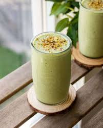

Limonada Suica
Ingredientes
- 3 limões
- 1 colher(sopa) de açúcar
- 2 doses de leite condensado
- 2 copos de água, 300 ml
- Gelo picado
Modo de Preparo
- 1
Corte o limão, tire a parte branca e corte ao meu de novo.
- 2
Coloque no liquidificador juntamente com o açúcar, e o leite condensado
- 3
Junte o gelo picado e a água.
- 4
Bata tudo por uns 10 ou 15 segundos.
- Coe e sirva.
- 6
Se preferir, decore com uma fatia de limão em torno do copo.
Milkshake de Morango
Ingredientes
- 3 bolas de sorvete de morango
- 1 copo de leite gelado
- cobertura para sorvete de morango
Modo de Preparo
- 1
Bata o leite e o sorvete no liquidificador por 1 minuto.
- 2
Decore um copo grande com cobertura de morango .
- 3
Despeje o batido no copo.
Vitamina de Abacate

Ingredientes
- 1 xícara (chá) de Leite
- 2 colheres (sopa) de leite em pó
- Meia xícara (chá) de abacate maduro
Modo de Preparo
- Em um liquidificador, bata todos os ingredientes com 2 pedras de gelo. Sirva a seguir.
Chá gelado de pêssego

Ingredientes
- 4 sachês de chá de preto
- 4 xícaras (chá) de água fervente
- 2 pêssegos maduros
- 2 colheres (sopa) de açúcar
- Gelo a gosto
Modo de Preparo
- Em uma chaleira, em fogo médio, aqueça a água até ferver.
- Desligue o fogo e adicione os sachês para infusionar por cerca de 6 minutos.
- adicione o açúcar.
- Enquanto isso, descasque e pique os pêssegos.
- Para o purê de pêssegos, bata os pedaços no liquidificador ou corte e amasse bem.
- Acrescente o purê ao chá-preto e leve à geladeira por cerca de 1h30 antes de servir em seguida com gelo.